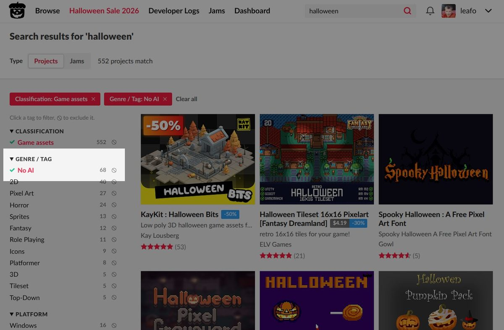

AI och tech
Delvis obekräftatitch.io raderar terabyte av AI-skräp och låter köparna filtrera bort AI-genererat

Indieplattformen itch.io har raderat "ett par terabyte" AI-genererat skräp och skärper kraven på att berätta när generativ AI har använts. Nu måste även bordsspel, böcker, serier och musik märkas, och köparna kan filtrera bort AI-innehåll direkt i sökresultaten. Bakgrunden är en kraftig ökning av nya uppladdningar, och inlägget om raderingen har fått över 120 000 gillningar. Många utvecklare jublar, men flera påpekar att problemet är snabbt växande mängder innehåll som ingen köper.
Det började med ett kort inlägg tidigt på tisdagsmorgonen. "Just deleted a couple terabytes of ai slop 😌", skrev itch.io, den stora plattformen för indiespel och andra digitala skapelser. Inlägget har fått över 120 000 gillningar och har blivit ett av de mest uppmärksammade inläggen på X under dagen. I ett uppföljande inlägg förklarar itch.io att bara för att det går att ladda upp tio terabyte dåligt optimerade AI-genererade modeller betyder det inte att man ska göra det, och påminner om att kvalitetsriktlinjerna har haft en regel mot AI-spam i över två år.
Nya krav på märkning
Samtidigt skärper plattformen reglerna. Spelresurser, alltså grafik, modeller och annat som utvecklare köper till sina spel, har i två år behövt märkas om generativ AI använts. Nu gäller samma krav även för bordsspel, böcker, serier och musik, enligt itch.io. Plattformen har också lagt till filtrering på fler ställen, bland annat i sökresultaten, så att köparna kan välja bort det som märkts som AI-genererat. Analyssajten Last Keycap beskriver det som att itch.io inför AI-filter i sökningen.
Fler uppladdningar, inte fler köp
Bakgrunden är en snabb ökning av nytt innehåll. Den japanska spelsajten Denfaminicogamer skriver att antalet nya spelsidor per dag har fördubblats de senaste två månaderna, medan köpen och nedladdningarna inte har fördubblats. Spelsajten DreamStation.cc skriver att itch.io har visat hur mycket AI-skräp som översvämmar spelbutikerna. I ett svar till KenneyNL skriver itch.io att de som laddar upp i stor skala tas bort från sökindexet, men att ökningen i grafen till stor del drivs av personer som laddar upp för första gången.
Utvecklarna: mättat och svårt att synas
Många hyllar beskedet, men oron för vad flödet betyder finns kvar. Den japanska utvecklaren karou2rikon beskriver hur AI-innehållet ökar och mättar plattformen, och användaren kry_nng konstaterar att det blir fler säljare när AI tillåts, men att köparna inte blir fler i samma takt. interestick välkomnar filtret och tror att Steam kan följa efter. Alla är dock inte ense om var gränsen går. Ron Edgecomb sammanfattar en vanlig invändning med orden "Hate Slop, Not AI": problemet är lågkvalitativt massinnehåll, inte tekniken i sig. Enligt X:s sammanställning har diskussionen spridit sig brett bland spelutvecklare och spelare.
Så vet vi det
Källmix: 13 källor – 5 primärkälla, 1 ögonvittne, 2 analys, 2 journalist, 3 debattör. Etablerad media utgör 0 av 13.
- Primärkälla itch.io: "Just deleted a couple terabytes of ai slop"
- Primärkälla itch.io: om 10 terabyte AI-modeller och spamregeln i kvalitetsriktlinjerna
- Primärkälla itch.io: AI-märkning krävs nu för brädspel, böcker, serier och musik
- Primärkälla itch.io: AI-filtrering i fler delar av sajten, bland annat sökresultaten
- Primärkälla itch.io svarar KenneyNL om massuppladdare och förstagångsuppladdare
- Journalist Denfaminicogamer: nya spelsidor per dag har fördubblats på två månader
- Journalist DreamStation.cc: hur mycket AI-skräp som översvämmar butikerna
- Analys Last Keycap: itch.io inför AI-filter i sökningen
- Ögonvittne karou2rikon, japansk spelutvecklare: AI-innehållet ökar och mättar plattformen
- Debattör kry_nng: fler säljare men inte fler köpare
- Debattör interestick: väntar sig att Steam följer efter
- Debattör Ron Edgecomb: "Hate Slop, Not AI"
- Analys X:s sammanställning av diskussionen
Raderingen, de nya märkningskraven och sökfiltret kommer från itch.io:s egna inlägg på X. Hur mycket som faktiskt raderades är inte närmare preciserat än "ett par terabyte", och inlägget är skrivet med glimten i ögat. Uppgiften att antalet nya spelsidor per dag har fördubblats på två månader utan att köpen och nedladdningarna har gjort det kommer från den japanska spelsajten Denfaminicogamer, och vi har inte sett itch.io:s egna siffror i original. Att Steam skulle följa efter är en enskild användares förväntan.
Fördjupa
Frågorna öppnar Grok i en ny flik med artikeln som underlag. AI-svar kan innehålla fel, så kontrollera mot källorna.
- Vad räknas som "AI-skräp", och hur skiljer itch.io det från seriösa projekt där AI använts? ↗
- Hur fungerar itch.io:s krav på att märka generativ AI, och vad händer den som inte märker? ↗
- Varför har antalet nya uppladdningar ökat så snabbt just nu? ↗
- Hur hanterar Steam och andra spelbutiker AI-genererat innehåll? ↗
- Kan ett filter mot AI-innehåll slå fel mot utvecklare som bara använt AI till småsaker? ↗
- Vad betyder översvämningen för små indieutvecklare som försöker synas? ↗
Läs vidare
Uppdateringslogg
- 15:27 – Artikeln publicerad.